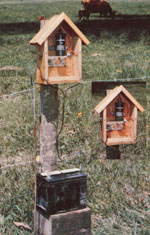
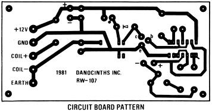
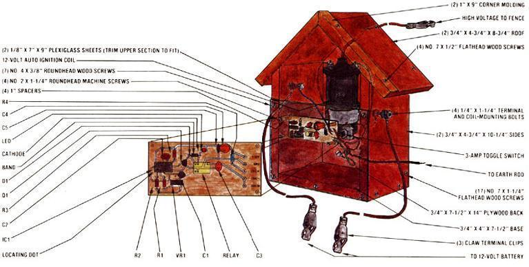

Footloose livestock and the crop losses that resulted combined to "spark" our creative talents.
Whether you're growing vegetables or raising critters (and especially if you're doing both), you know the importance of keeping hungry livestock in their place. Of course, barbed wire will usually serve as an effective deterrent to all but the most determined animals. For those few headstrong beasties, though, an electric fence might be just the ticket . . . and it requires less sturdy, and thus often less expensive, posts than would a barbed wire enclosure.
However, if you were to buy a fence charger at your local farm supply house, that piece of equipment would probably set you back between $25 and $35. You'll be glad to know, then, that it's possible to make this component on your own-using readily available, and some easily salvageable, electronic parts and the information given here-for as little as $10 or $15.
HARDWORKING . . . AND HOT!
The charger we put together is powered by a 12-volt automotive battery, and can deliver an attention-getting 25,000 volts of electricity to the fence strands once every second. Built around a standard car ignition coil, the device hasn't enough amperage to seriously harm or to kill an animal, but its "bite" will certainly serve to reinforce the concept that territorial boundaries do exist!
Essentially, the salvaged coil does much the same job as it did under the hood of a car, but a simple relay replaces the breaker points. When that device's contacts are closed, current flows through the coil, which has the ability to store energy. Then, when the contacts come open (thus breaking the circuit), the pent-up power has no place to go, and the magnetic field collapses . . . inducing current in the coil's secondary winding. Because there are many more turns in this latter wrap than there are in the primary winding, the voltage is amplified considerably and then passed directly to the conductive fence wire.
The relay is energized for only an instant - actually about 15/ 1,000 of a second since the current flow is controlled by a single basic integrated circuit. Housing 32 individually connected transistors, this 79d electronic marvel generates a pulse (with a little help from a couple of timing circuits) every second or so, activating the relay. A variable resistor can be used to adjust the rate of pulse.
BUILD IT FOR A SONG
click here to enlarge
For the sake of your parts-shopping convenience, our materials list includes standard Radio Shack components and catalog numbers. The items can all be purchased from your local retail outlet for about $11, with the exception of the ignition coil and the printed circuit board.
The coil-which must be from a conventional automotive ignition system rather than the newer transistorized versions should be easy to scrounge, or perhaps purchase for a pittance at a wrecking yard.
The circuit board can be obtained in several ways, as well. If you have some experience with electronic do-it-yourself projects, you may wish to make up your own from the full-size pattern shown below. (Even if you have absolutely no such experience, you could still try your hand at boardmaking, using a printed circuit kit available from Radio Shack.)
Another option is to buy a ready-made, predrilled board manufactured specifically for this project by Danocinths, Inc. (see the materials list for ordering information).
The rest of the job is easy: Simply insert the parts into their respective holes, following the layout guide. (Remember, it is critical that you observe the direction and polarity of the components.) Once the pieces are in place, use rosin-core solder and a small pencil iron to fasten them to the board. Try to avoid producing an excessive buildup of the conductive melt or allowing it to bridge two adjacent paths.
Next, cut five 12" lengths of 18- or 20gauge insulated wire and fasten them through the board's quintet of in-line holes . . . which lead to the ground, power, earth, and two coil terminals (it doesn't matter, at this point, which wire goes where). Then set the circuit board aside and begin assembling a protective enclosure for the electrical components.
Though any nonconductive material will do for this job, we chose to make a simple shed . . . using a 46" length of 1 X 5, a 7-1/2" X 14" piece of 3/4" plywood, an 18" scrap of 1 " corner molding, and a hunk of plexiglass measuring 9" X 15". (A piece of Masonite hardboard could be substituted for this last part, but only if it's sufficiently waterproofed first.)
Start by cutting the wooden parts to the sizes indicated in the diagram on the following page. Note that the two wall pieces and the corner moldings-will have to be mitered to 45 °. Then assemble the box, using No. 7 X 11/4" flathead wood screws where indicated and making sure that the heads are countersunk and the joints protected with putty or silicone sealant.
Now, drill two 1/4" holes (they'll accommodate the two battery terminals) through the right and left walls, and bore four more 1/4" openings through the back wall: one each for the high tension lead, the coil mount, and the earth terminal, plus a final hole, near the roof peak, to allow you to hang the unit. You can also, at this time, coat all the wooden parts with a protective water-repellent sealer such as polyurethane.
With that done, go on to trim the plexiglass face cover to size and prepare to install it to the front of the box with No. 4 X 3/8" roundhead wood screws. To make the assembly job easier, you'll probably want to cut the cover in half, horizontally, about 7" below its peak . . . and then mount the circuit board to the lower section of plexiglass with four No. 2 X 1-1/4" roundhead machine screws, nuts, and 1 " spacers. Then, while you're at it, install the toggle switch. (Before screwing either cover in place, though, be sure to run the proper wires to 1/4"-bolt negative battery and earth terminals, hook up the coil and mount it with another 1/4" fastener-making certain its high tension lead isn't routed near the sensitive electronic components as it passes through the back of the box-and wire the switch into the positive battery lead, at a point before the terminal, as shown in the illustration.)
All that's left, then, is to mount the corner molding to the face of the roof peak (over the plexiglass cover), using No. 7 X 1/2" flathead wood screws . . . waterproof these remaining sections . . . and install the. battery cables and some claw terminal clips at the ends of the exterior wires.
USE IT FOR MONTHS
This homemade fence charger is, of course, hooked up in the same way as are the store-bought ones. We simply hung the box on a convenient fencepost, placed a 12-volt auto battery-raised off the ground -beneath it, and drove a 4-foot bare steel rod into the earth near the site. (If you choose to build another enclosure to protect the battery from the weather, as shown on the cover of this issue, make sure you provide vent holes to allow any combustible gases to escape.)
The positive and negative leads go to their respective terminals on the battery, the terminal labeled "earth" should be connected to the buried steel rod with a piece of (preferably insulated) wire, and the high voltage lead gets clipped directly to the bare fence strand.
Keep in mind, though, that the "hot" fence wire will do its job only if it's [1] insulated from both the fenceposts and the ground with standard ceramic or plastic knobs (of course, you could try homemade protectors such as bottle necks or PVC pipe sections), and [2] placed at an appropriate height for the animals you're trying to train.
Remember, too, that you can run several strands of fence wire at different levels if they're simply tied together by a connecting conductive wire. This arrangement will allow you to keep both adult and young beasts from passing through your chosen borders.
Given tight connections and a healthy battery, your fence charger ought to function for several months without a "boost" . . . and the unit itself should last for quite a while before any component part gives up.
Additionally, since the pulse rate is adjustable, you can stretch the device's working life a bit by starting it off at a rapid rate, then, after a few days (by which time most of your critters will have learned their lessons), cutting it back by turning down the variable resistor.
If you're interested in tinkering and don't mind saving a few bucks in the bargain, do consider building this little hotbox ... we're willing to bet that your garden (or your neighbors!) will thank you for it.
|
 |
 |
 |
|
|
|
|